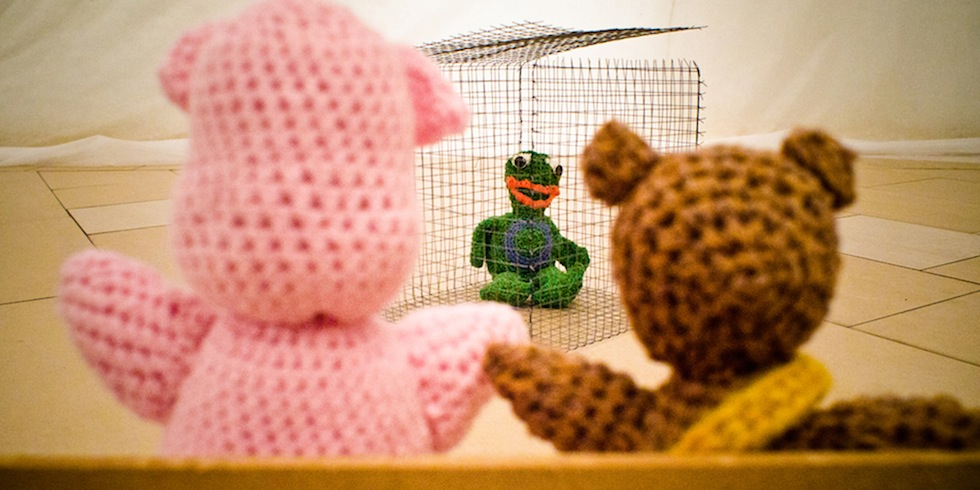
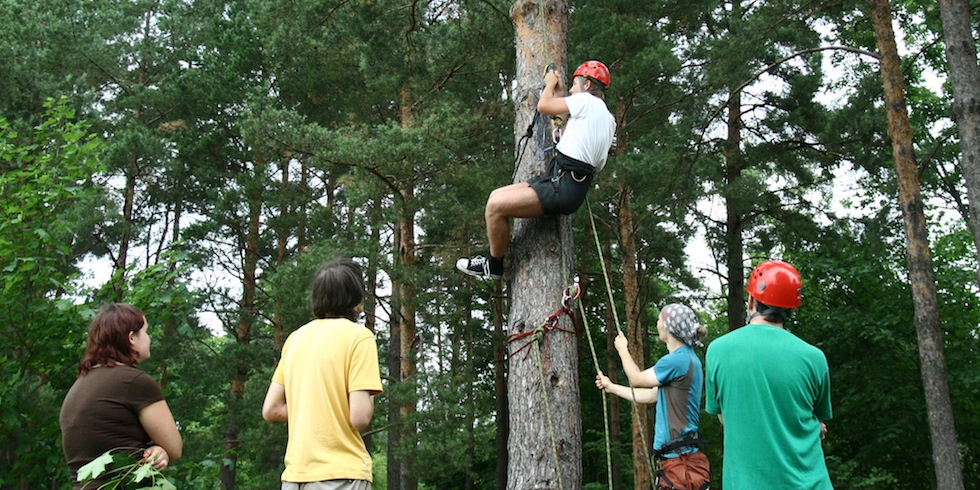
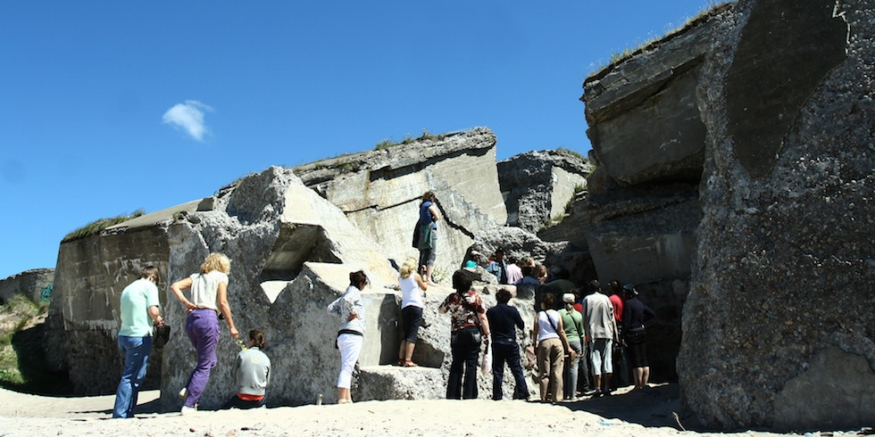

- 
-

-

-

- 
- 
Garīgā veselība
Ko nozīmē vesels cilvēks? Vesela cilvēka koncepts ir atšķirīgs dažādos filozofiskos un reliģiskos skatījumos. Tādēļ ir svarīgi uzreiz definēt šinī tekstā izmantoto skatījumu. Pasaules veselības organizācija ir izveidojusi veselības definīciju un izmantojot šo definīciju mēģināsim iegūt skaidrību par garīgo veselību.
Veselība ir pilnīgas fiziskās, garīgas un sociālas labklājības stāvoklis un ne tikai slimības vai kādas citas patoloģijas trūkums.
Veselības definīcijā vienlīdz svarīgu lomu ieņem kā fiziskā veselībā, tā arī garīgā veselība un sociālās labklājības stāvoklis. Veselība tiek skaidrota ar trīs lielu domēnu palīdzību - fiziskā veselība, garīgā veselība un sociālās labklājības stāvoklis. Par pilnīgu veselību runājot nevar aizmirst nevienu no komponentiem.
Ja par fizisko veselību šķiet nevajadzētu rasties plašiem jautājumiem, tad pilnīgs garīgas un sociālas labklājības stāvoklis var šķist neskaidrs.
Pilnīgs garīgās labklājības stāvoklis
Garīgās veselības būtību palīdz definēt Starptautiskā funkcionēšanas, nespējas un veselības klasifikācija, jeb SFK. Klasifikācijā veselības stāvokļa kontekstā psihiskās funkcijas tiek pieskaitītas pie Ķermeņa funkcijām.
Neveselība tiek definēta kā: ķermena funkciju vai struktūras problēmas – kā, piemēram, nozīmīga novirze vai to zudums.
Neveselība tiek raksturota ar funkcijas zuduma pakāpi.
NAV neveselības (nekāda, neesoša, vērā neņemama,…) 0-4%
VIEGLA neveselība (niecīga, maza,…) 5-24%
MĒRENA neveselība (vidēja, mēreni smaga,…) 25-49%
SMAGA neveselība (augsta, ārkārtīgi smaga,…) 50-95%
ABSOLŪTA neveselība (pilnīga,…) 96-100%
Kā psihisko funkciju piemērus var minēt: Apziņas funkcijas, intelektuālās funkcijas, temperementu un personības funkcijas, uzmanības funkcijas, atmiņas funkcijas, psihomotorās funkcijas, emocionālās funkcijas, kāre, apetīte utt.
Ar pilnu psihisko funkciju sarakstu ir iespējams iepazīties Starptautiskajā funkcionēšanas, nespējas un veselības klasifikācija saite.
Sociālās labklājības stāvoklis
Sociālās labklājības stāvokli skaidro Myers, Sweeney, Witmer Labklājības modelis. Tajā iekļauti 5 svarīgākie pamatnosacījumi:
· Darbs,
· atpūta,
· draudzība,
· mīlestība,
· personības neatkarība;
un 12 pakārtotas vajadzības: kā cieņa, situācijas kontroles sajūta, ticība saviem spēkiem un nākotnei, emocionāla saprašanās un spēja kontrolēt emocijas, spējas risināt problēmas, humora izjūta, adekvāts uzturs, fiziskā aktivitāte, pašaprūpe, stresa menedžments, dzimuma un kultūras identitāte.
Veselība
Veselības koncepts veidojas no trīs domēniem - fiziskās veselības, garīgās veselības un sociālā labklājības stāvokļa. Nosauktie domēni savstarpēji mijiedarbojas tādējādi garīgo veselību ietekmē gan sociālās labklājības stāvoklis, gan fiziskā veselība. Tādā pašā veidā garīgajai veselībai ir ietekme uz fizisko veselību un sociālās labklājības stāvokli.
Lai runātu par pilnīgu veselību personai ir jābūt apmierinātām visām uzskaitītajām komponentēm, tomēr ļoti būtiski ir saprast ka vienas komponentes deficīts vai traucējums uzreiz vēl nenozīmē slimību. Uzskaitīto koponentu saraksts nevar kalpot kā slimības diagnosticēšanas kritērijs, šis saraksts palīdz labāk saprast kas ir pilnīgs veselības stāvoklis.